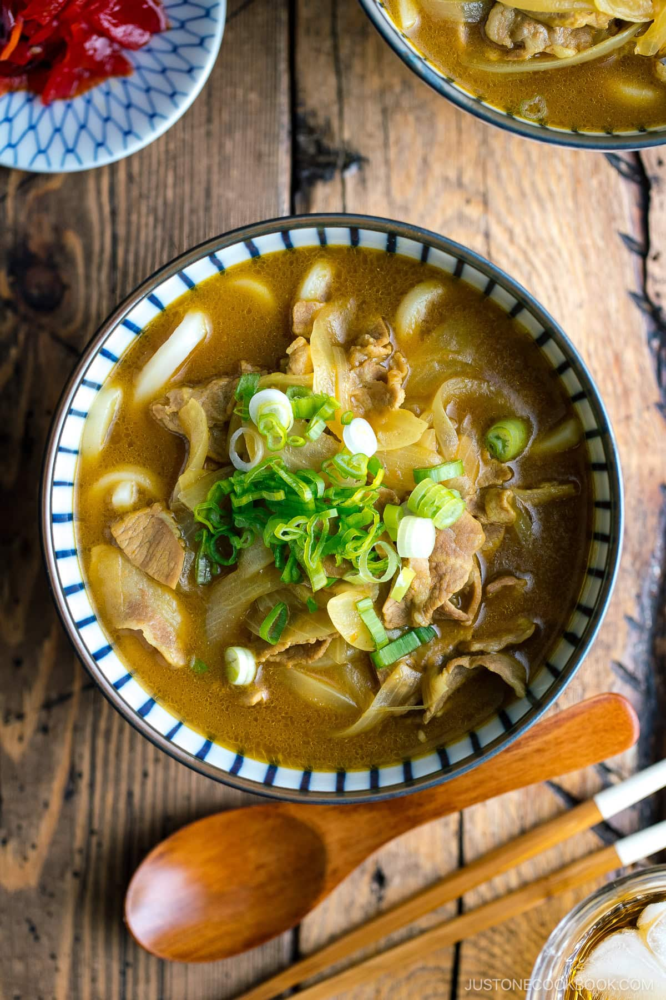

Curry udon

Curry Udon (カレーうどん) is a popular menu item in Japan, and has been for a long time. It is lesser-known compared to Curry Rice, but the flavorful curry sauce is just as fulfilling in a soup with udon.
Ingredients You’ll Need
- Protein of your choice – I used bite-sized pieces of thinly sliced pork loin that cooks in seconds;
you can substitute chicken, beef, or seafood; for vegan curry udon, use tofu or shiitake mushrooms
onion
- onions (scallions) – for garnish
- udon noodles – read more about it below
- (Japanese soup stock)
- Japanese curry roux – use store-bought Japanese curry cubes or make your own; read more about it below
soy sauce
How to Make Curry Udon
Make this satisfying noodle dish in under 30 minutes! Here's an overview of the instructions:
- Make the dashi in a saucepan or pot.
- the onion and protein of your choice in a frying pan with neutral oil.
- add the dashi and curry roux to the pan and simmer over medium-low heat.
- oil the udon noodles in a large pot of water and drain.
- Serve the noodles in individual bowls. Pour the curry soup on top.